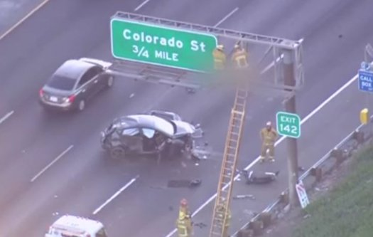

Family of Ejected Driver Sacrificed a Lamb to 'Protect Him From Evil' Days Before Fatal Crash
The family of a Los Angeles driver who was killed when he crashed his car and was ejected 20 feet in the air into a freeway sign had only days before performed an animal sacrifice they hoped would protect the 20-year-old from harm.
Richard Pananian died on Friday when he was tossed from his small Ford after crashing into another vehicle while driving at what California Highway Patrol called a high rate of speed. His body was found on an interstate sign above the wreckage.
According to his cousin, Pananian's Christian Armenian family had taken the bizarre step of performing the traditional "matag" lamb sacrifice on Oct. 25, mere days before his shocking death.
The man who identifies himself as Pananian's cousin, Armen Kardashian of Glendale, revealed on a GoFundMe page that the car-loving LA native had close calls before.
"In the Armenian culture sacrifices are done when someone escapes death, as Richards life was once sared [sic]," Kardashian wrote.
Pananian even used a seatbelt more commonly seen in race cars.
"I myself had sat in the car with Richard countless times, and he had a 5 point safety harness that he wore all the time! All the time!!" Kardashian wrote.
Kardashian said he started the fundraiser in order to offset any funeral costs for the family, as well as any potential "costs incurred through any damages, and any private or public service of their choosing."
Reeling as he is, Kardashian admits this tragedy has shaken his once-strong faith.
"If God works in mysterious ways his way remains a mystery to me and has crushed this family as a whole," he wrote.
Pananian's compact Ford rolled over several times and he was ejected from the car, landing on a freeway sign, California Highway Patrol spokesman Officer Chad Guin said.
No one in the other vehicle was injured, he said.
"We have never seen anything like this, where a party was ejected and come to rest on a street sign,” Guin told INSIDE EDITION, saying the man was not believed to be properly wearing his seatbelt at the time of the crash.